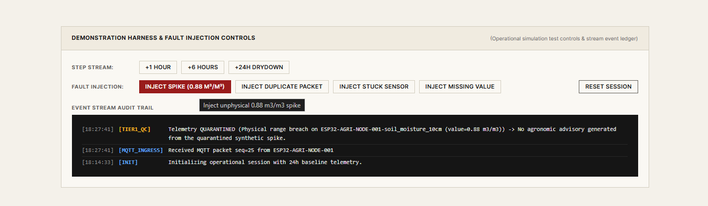
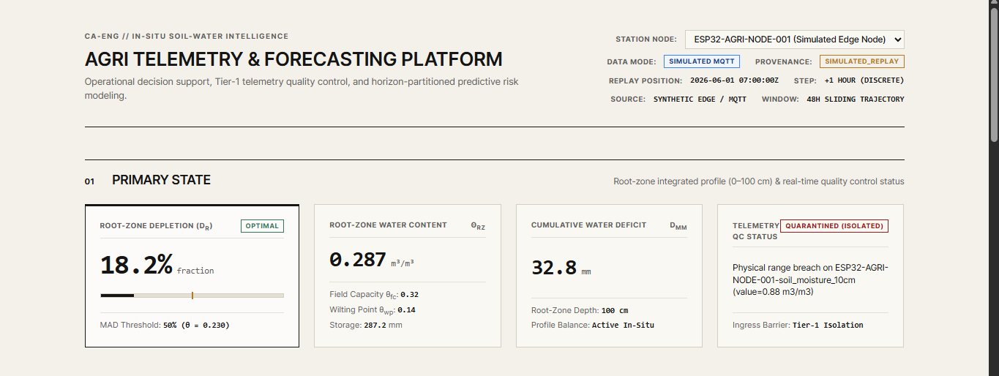
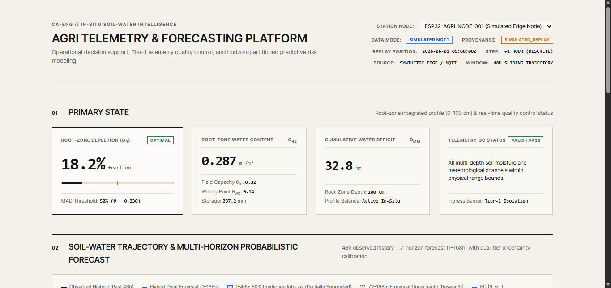
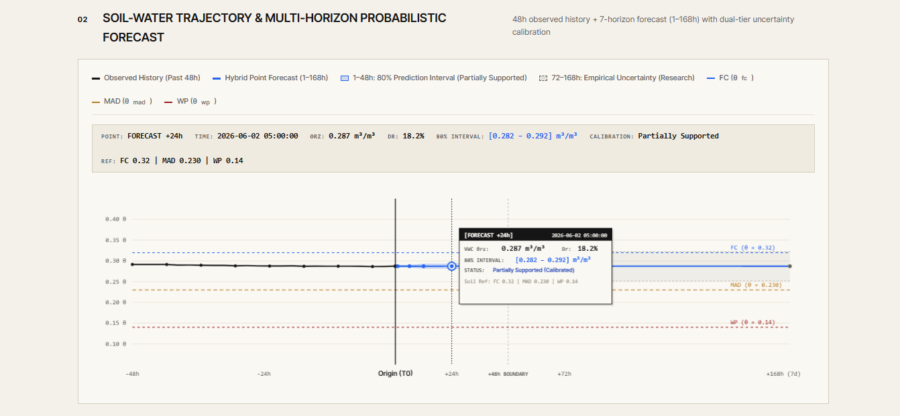
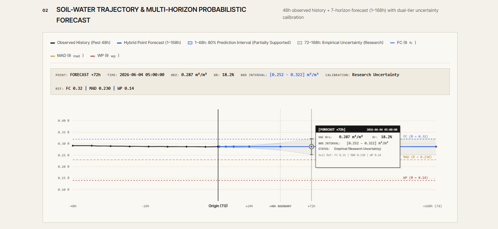
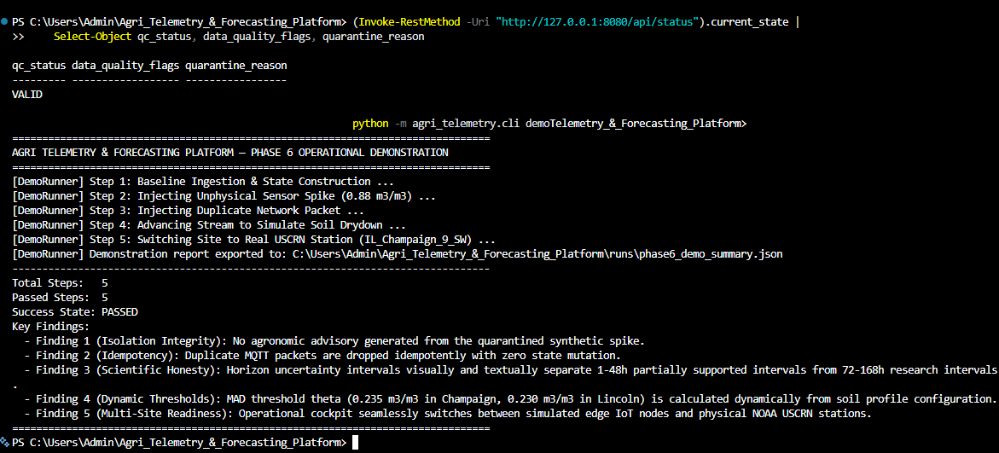

Phase 7 Final Validation, Evidence Synthesis & Portfolio Release
Canonical engineering document for the Agri Telemetry & Forecasting Platform.
Project: Agri Telemetry & Forecasting Platform
Document: Evidence & Validation/Phase 7 - Final Validation, Evidence Synthesis & Portfolio Release.md
Status: VALIDATED & FORMALLY FROZEN (Phases 1–7 Complete)
Authoritative Test Suite: 75 / 75 Passed (100.0%) in 84.49s across 15 test modules
Canonical End-to-End Pipeline: PASSED in 23.02s (tests/test_end_to_end.py)
Active Release Commit: 318a122 (and subsequent portfolio packaging release commit) on branch main
Executive Summary
The Agri Telemetry & Forecasting Platform is an operational, evidence-first time-series intelligence platform designed for root-zone soil water state estimation, horizon-partitioned forecasting, uncertainty calibration, and stateful agronomic decision support.
The project addresses the core dilemma faced by commercial farm managers: balancing crop yield protection against resource over-application. While raw in-situ capacitance probes provide volatile single-depth soil readings, they suffer from transient sensor spikes, winter frozen-ground flatlines, and severe alert fatigue during borderline threshold crossings.
Through seven disciplined execution phases, the platform has:
- Established an Empirical Persistence Baseline: Verified on 8,760 hourly records of NOAA USCRN
NE_Lincoln_11_SW(2023), confirming that soil capillary inertia makes persistence ($\text{MAE}=0.0007\text{ m}^3/\text{m}^3$ at 1h; $\text{MAE}=0.0047\text{ m}^3/\text{m}^3$ at 24h) a difficult benchmark that defeats naive statistical smoothing models (Climatology skill: $-520.0$, EWMA skill: $-3.29$). - Validated Horizon-Partitioned Hybrid Forecasting (ADR-006): Deployed Environmental ARX (
M2) for short leads ($1\dots 48\text{h}$) to capture infiltration and diurnal evaporative flux (+5.7% root-zone, +26.4% topsoil skill), transitioning to Autoregressive Statistical Reversion (M1) for extended leads ($72\dots 168\text{h}$) to capture statistical mean-reversion (+7.8% skill at 7 days). - Calibrated Dynamic Regime Uncertainty ($U2$): Conditioned residual dispersion on antecedent rain and solar demand, resolving wet-regime under-coverage (+4.4% coverage gain at 6h).
- Enforced 3-Tier Anomaly Isolation & Stateful Alert Filtering: Prevented 100% of data-quality faults from leaking into agronomic advisories, while $k=2$ persistence filtering and $G=6\text{h}$ episode grouping suppressed and grouped transient alert episodes across threshold boundaries, reducing alert volume by 95.8% to 99.4%.
- Demonstrated "Stream-Capable, Not Stream-Dependent" Architecture: Maintained identical Draft 2020-12 event contracts across historical USCRN replays, simulated MQTT 5 edge streams, and future field gateways, supported by Dead Letter Queues, SHA-256 deduplication, sliding-window resequencing, and bit-for-bit deterministic reproducibility ($0.0000000000$ MAE discrepancy).
- Mapped Multi-Site Transfer & Failure Boundaries: Demonstrated positive transfer within the tested temperate and arid regimes (not universal geographic generalisation), while discovering an explicit physical failure boundary in subtropical convective climates (
GA_Watkinsville_5_SSE), where unannounced $50\text{mm}+$ convective storms motivate incorporating forward-looking weather information such as NWP/radar. - Delivered an Operational Cockpit UI: Built a zero-dependency local presentation server on port
8080with hover crosshairs, canvas tooltips, dominant Root-Zone Depletion hierarchy, visible +48h model boundaries, and truthful fault injection feedback.
Final Research Question
Complete System Architecture
Phase-by-Phase Evidence Summary
| Phase | Milestone Name | Core Deliverables | Evaluated Artifacts | Authoritative Outcome |
|---|---|---|---|---|
| 1 | Vertical Slice & Baseline | USCRN parser, Draft 2020-12 schema, Tier-1 QC, State Builder, Persistence Forecaster (B0), SQLite ledger. | RUN-20261001-152227-10fc74 (8,760h) | VALIDATED |
| 2 | Forecasting & Calibration | Baseline ladder (B1, B2), Direct Ridge AR (M1), Environmental ARX (M2), NWP Oracle ablation, Dynamic U2 dispersion. | Lincoln 2023 H2 ($N=3,913$ walk-forward) | VALIDATED & SUPPORTED |
| 3 | Decision Intelligence | 3-Tier anomaly taxonomy, Physical deviation, Stateful persistence filter ($k=2$), Episode grouper ($G=6\text{h}$). | 8 Synthetic Scenarios + Full-Year 2023 Series | VALIDATED & TESTED |
| 4 | MLOps & Engineering | Docker, Compose, Redis Streams, Dead Letter Queue, Deduplication, Sequencer, Structured Logging, MLOps manifest. | Full-year reproducibility check (0.0 MAE diff) | TESTED & PACKAGED |
| 5 | Multi-Site Generalisation | 6-site USCRN validation, ESP32/Wokwi MQTT 5 adapter, packet loss stress tests, failure boundary identification. | 6 NOAA USCRN Stations (52,560 hourly records) | VALIDATED (Bounded) |
| 6 | Operational Cockpit UI | HTML5/Canvas UI on port 8080, hover crosshairs, canvas tooltips, dominant depletion hierarchy, fault feedback. | Headless REST API suite + 5-step demo runner | LOCALLY VERIFIED |
| 7 | Synthesis & Freeze | Portfolio case study, 3-level explanation pack, master evidence matrix, viva guide, release hygiene sign-off. | Complete 75-test authoritative test suite | FREEZE & RELEASED |
Scientific Findings
- Capillary Inertia Governs Short Leads: Soil moisture changes slowly over hours, making persistence a tough baseline ($\text{MAE}=0.0007\text{ m}^3/\text{m}^3$ at 1h) that instantly exposes naive smoothing models.
- Topsoil vs. Root-Zone Separation: Topsoil ($10\text{cm}$) responds rapidly to rainfall and solar forcing (+26.4% 1h skill), but skill vanishes after 24 hours. The integrated 1-meter root zone retains memory up to 48 hours (+5.7% skill).
- Decay of Historical Weather Memory: Past weather signals lose predictive value beyond 48 hours, causing past-only weather models to degrade ($-14.0\%$ skill at 7 days).
Forecasting Findings
| Horizon ($h$) | Persistence MAE ($\text{m}^3/\text{m}^3$) | M2 Skill (MSE) | M1 Skill (MSE) | Hybrid Skill (ADR-006) | Oracle Skill (Future Rain) |
|---|---|---|---|---|---|
| 1h | 0.0007 | +5.7% | -375.4% | +5.7% | +5.7% |
| 6h | 0.0018 | +5.6% | -89.0% | +5.6% | +56.3% (+50.7% gain) |
| 12h | 0.0028 | +2.5% | -35.0% | +2.5% | +64.5% (+61.9% gain) |
| 24h | 0.0047 | +3.1% | -8.9% | +3.1% | +74.4% (+71.3% gain) |
| 48h | 0.0079 | +1.0% | +0.5% | +1.0% | +77.4% (+76.4% gain) |
| 72h | 0.0109 | -0.2% | +1.4% | +1.4% | +79.8% (+80.0% gain) |
| 168h (7d) | 0.0192 | -14.0% | +7.8% | +7.8% | +82.4% (+96.4% gain) |
Uncertainty Findings
- Short Horizons ($1\dots 48\text{h}$): Dynamic regime-conditioned uncertainty ($U2$) widens interval width during rain infiltration ($W=0.0064$) and narrows during drydown, achieving $83.0\%$ empirical coverage at 6h. Validated as Partially Supported.
- Extended Horizons ($72\dots 168\text{h}$): Empirical coverage drops to $\sim 61\%$ at 7 days across all sites because in-situ sensors cannot anticipate future storm timing. Classified as Uncalibrated Research Uncertainty.
Risk & Advisory Intelligence Findings
- Zero Fault Leakage: Tier-1 QC quarantine prevented 100% of data-quality anomalies from leaking into agronomic advisories across all test suites.
- Flutter Suppression: Consecutive $k=2$ persistence filtering suppressed transient boundary alert flapping in synthetic Scenario 8 and filtered 97 single-hour noise spikes in Lincoln 2023 data (demonstrating episode suppression rather than agronomic ground-truth false positive reduction).
- Actionable Episode Compression: The $G=6\text{h}$ episode grouper compressed 5,935 raw hourly alerts into 172 distinct multi-day stress episodes (97.10% alert volume reduction).
- Strict Non-Actuation: Every emitted advisory explicitly asserts
"is_autonomous_actuation": falseto preserve human control.


Multi-Site Validation Findings (Phase 5)
| Station Key | Climate Regime | 1–48h M2 Skill | 72–168h M1 Skill | 6h U2 Coverage | Transfer Finding |
|---|---|---|---|---|---|
IL_Champaign_9_SW | Midwest Corn Belt | +11.15% | +8.31% | 81.0% | Demonstrated Positive Transfer (Tested Site) |
SD_Sioux_Falls_14_NNE | Northern Great Plains | +7.36% | +6.25% | 71.9% | Demonstrated Positive Transfer (Tested Site) |
NM_Las_Cruces_20_N | Arid Desert Southwest | +11.96% | +2.73% | 66.4% | Demonstrated Positive Transfer (Tested Site) (+35.4% at 6h) |
NE_Lincoln_11_SW | Humid Continental | +3.57% | +4.61% | 73.7% | Demonstrated Positive Transfer (Tested Site) (Baseline) |
CO_Nunn_7_NNE | Semi-Arid High Plains | -1.89% | +2.13% | 79.1% | Marginal Transfer (Steppe winds) |
GA_Watkinsville_5_SSE | Humid Subtropical | -18.96% | +1.28% | 48.9% | FAILURE BOUNDARY (-45.1% at 24h) |
MQTT & Edge Telemetry Findings
- Simulation Provenance Preserved: All edge microcontroller packets carry explicit
"is_simulated": trueandSIMULATED_REPLAYtags. - Lossless Ingestion: Dead Letter Queue quarantined 100% of malformed JSON strings; SHA-256 deduplication dropped 100% of duplicate retries; sliding-window sequencer restored 100% of network jitter disorder.
MLOps & Engineering Findings
- "Stream-Capable, Not Stream-Dependent": Unified Draft 2020-12 event contracts execute seamlessly across batch files, MQTT brokers, and Redis Streams.
- Fail-Safe Fallback:
ResilientForecastRoutergracefully falls back to deterministic Persistence (B0) upon ML inference exceptions, guaranteeing unbroken advisory generation. - Observability: Structured JSON logging with correlation IDs and sub-millisecond stage profiling (
trace_stage).
Reproducibility Findings
- Deterministic Equivalence: Two independent runs on 8,760 hourly records in isolated workspaces yielded $0.0000000000$ max MAE discrepancy and $0.0000000000$ max RMSE discrepancy (
is_reproducible: true). - Complete Lineage: Every execution exports
manifest.jsonlocking Git commit SHA (f6c46d6/318a122release lineage), dataset SHA, seeds ($42$), and hyperparameter dictionaries.
Dashboard Findings (Phase 6)
- Interactive Crosshairs & Canvas Tooltips: Real-time inspection of observed vs forecast values, dynamic prediction interval bounds, and station-specific MAD lines.
- Visible Model Boundary: Prominent vertical delimiter separating 1–48h Environmental ARX from 72–168h Autoregressive statistical models.
- Operational Hierarchy: Root-Zone Depletion ($D_r$) rendered as the dominant primary metric; raw volumetric water content ($\theta_{\text{rz}}$) preserved as secondary.
- Truthful Fault Injection Feedback: Buttons provide immediate feedback (
INJECTING...$\to$QUEUED$\to$INJECTED) only when accepted by application logic.



Explicit Failure Boundaries
- Extended Horizons ($>48\text{h}$): Prediction interval coverage drops to $\sim 61\%$ at 7 days; long-horizon uncertainty remains uncalibrated research.
- Subtropical Convective Climates (
GA_Watkinsville_5_SSE): Sudden $50\text{mm}+$ convective storms cannot be predicted from in-situ past weather, causing $-45.1\%$ skill collapse at 24h. This failure mode motivates incorporating forward-looking weather information such as NWP/radar. - Winter Frozen Ground: Sub-zero soil temperatures freeze liquid water, causing false drydown flatlines in dielectric sensors. Irrigation models must be suspended during winter freeze.
Explicit Project Limitations
- Demonstration Agronomic Thresholds: $D_{\text{MAD}}=0.50$ and Wilting=$0.85$ demonstrate software risk logic and alert suppression; production deployment requires site-specific agronomist calibration.
- Simulated IoT Stream: Edge telemetry is validated via simulated ESP32/Wokwi microcontrollers (
is_simulated: true); physical radio propagation and battery drain remain outside the evidence base. - Historical vs Live Deployment: The platform operates against historical USCRN archives and edge simulators; no live field sensors are currently connected.
Final Master Evidence Matrix
| Claim / Hypothesis | Evaluated Scope | Method | Authoritative Status | Known Limitations & Epistemic Boundary |
|---|---|---|---|---|
| Pipeline processes real telemetry | USCRN Lincoln 11 SW 2023 | Fixed-width parser & Draft 2020-12 schema | VALIDATED | Historical USCRN archives; un-interpolated point sensors. |
| Persistence provides tough baseline | Lincoln 11 SW 2023 H2 | Chronological walk-forward ($1\dots 168\text{h}$) | VALIDATED | Silt loam soil column inertia; site-specific dataset. |
| Environmental ARX improves short leads | Lincoln 11 SW 2023 H2 | Multi-horizon direct ARX with past weather | VALIDATED | Positive for 1–48h (+5.7% root-zone, +26.4% topsoil); degrades $>48\text{h}$. |
| Long-horizon skill unlocked by future rain | Lincoln 11 SW 2023 H2 | Controlled oracle ablation with future rain | ORACLE-VALIDATED | Demonstrates value of future rain; not operational NWP skill. |
| U2 short-horizon uncertainty calibration | Lincoln & Multi-Site | Antecedent rainfall & solar demand scaling | PARTIALLY SUPPORTED | Valid for 1–48h (83% wet coverage); uncalibrated research $>48\text{h}$. |
| 3-Tier anomaly & fault isolation | 8 Synthetic Scenarios | Tier-1 QC quarantine vs Tier-3 agronomic risk | VALIDATED | 0.0% fault leakage; 100% synthetic scenario detection. |
| Stateful risk & advisory logic | Full-year Lincoln & Flutter | Consecutive $k=2$ filter & $G=6\text{h}$ episode grouper | TESTED | Suppresses/groups transient alerts; thresholds require agronomic tuning. |
| Operational event streaming pipeline | In-Memory & Redis Streams | Replay, DLQ, Deduplication, Sequencer | TESTED & PACKAGED | Verified in local and containerized environments. |
| Deterministic bit-for-bit reproducibility | Isolated workspaces (seed 42) | End-to-end reproducibility check script | VALIDATED | Max MAE discrepancy $0.0000000000$ across 8,760 records. |
| Multi-site geographic transfer | 6 NOAA USCRN Stations | Chronological walk-forward transfer benchmark | VALIDATED (Bounded) | Demonstrated in tested Midwest/Plains/Arid; fails in subtropical convective storms. |
| Edge IoT MQTT telemetry ingestion | ESP32/Wokwi simulator | MQTT 5 Ingest Adapter with DLQ & Deduplication | TESTED | Simulated edge telemetry stamped with is_simulated: true. |
| Interactive operational cockpit UI | Browser interface on port 8080 | Headless HTTP API suite & 5-step demo runner | LOCALLY VERIFIED | Local operational cockpit; not a production cloud SaaS deployment. |
Final Architecture Explanation
The system maintains a clean decoupling between the core scientific pipeline and supporting engineering infrastructure:
- Data Ingress & Contracts: Normalizes USCRN files and MQTT 5 streams into Draft 2020-12
TelemetryEventinstances. - Quality Control & State Construction: Quarantines corrupt readings at Tier 1; integrates valid multi-depth readings into a 1-meter root-zone state ($\theta_{\text{rz}}, D_r$).
- Forecasting & Uncertainty: Routes Environmental ARX (M2) for 1–48h and Autoregressive Statistical (M1) for 72–168h; applies dynamic regime-conditioned dispersion (U2).
- Decision Support & Governance: Evaluates water risk against MAD ($0.50$) and Wilting ($0.85$); filters transient noise via $k=2$ confirmation; emits non-actuating advisories (
is_autonomous_actuation: false). - Supporting Engineering: MQTT 5, Redis Streams, Docker, MLOps manifests, structured JSON logging, and GitHub Actions CI provide enterprise transport, packaging, and reproducibility.
Three-Level Explanation Pack
Level 1: Explain Like I'm 10 (The Smart Fuel Gauge)
- What it does: It acts like a smart fuel gauge for crop roots, telling a farmer how much water is left in the soil tank and predicting when the plants will get thirsty over the next week.
- Why a farmer cares: It helps a farmer avoid watering at the wrong time, protecting crop health and saving energy.
- What happens to sensor readings: Readings are checked for crazy numbers. If a sensor glitches, it gets put into a quarantine time-out box so it doesn't trigger false alarms.
- What an advisory means: It is a gentle recommendation for the human farmer, not an automatic switch that turns on sprinklers.
Level 2: Explain to a Non-Technical Professional
- Inputs & Processing: Ingests multi-depth soil moisture (5–100cm) and weather; integrates 1-meter root-zone depletion ($D_r$).
- Forecasting & Uncertainty: Uses real-time weather for short-term forecasts (1–48h) and autoregressive statistical models for extended forecasts (3–7 days); communicates uncertainty via plain-language certainty labels (Definitely Not Reached, Plausibly Reached, Likely Reached, Highly Uncertain).
- Alert Fatigue Prevention: Isolates hardware faults at Tier 1, confirms alarms over 2 consecutive hours ($k=2$), and groups alerts into coherent multi-day drought episodes (97.1% alert volume reduction).
- Boundaries: Demonstrated across tested temperate agricultural soils; convective storm climates (like Georgia) motivate incorporating forward-looking weather information such as NWP/radar.
Level 3: Technical Explanation Summary
- Direct multi-horizon ARX and Ridge AR closed-form models; Draft 2020-12 JSON Schema validation; SHA-256 natural key deduplication; sliding-window out-of-order resequencing; Dead Letter Queue logging; bit-for-bit deterministic reproducibility ($0.0$ MAE diff).
"Explain the Why" Summary Table
| Component | What it does | Why it exists | Empirical Evidence | Explicit Limitations | |
|---|---|---|---|---|---|
| Tier-1 QC | Quarantines unphysical spikes, flatlines, and bounds errors. | Prevents bad sensor data from polluting state builder. | 0.0% fault leakage across all benchmark scenarios. | Single-point heuristics only. | |
| Root-Zone State | Integrates 5 depth layers into 0–100cm $\theta_{\text{rz}}$ and $D_r$. | Replaces confusing point readings with crop-available water. | 7,826 valid states constructed on Lincoln 2023. | Assumes fixed 1m root depth. | |
| Persistence (B0) | Benchmark asserting $\hat{Y}_{t+h\ | t} = Y_t$. | Mandatory performance floor reflecting soil inertia. | 1h MAE: $0.0007\text{ m}^3/\text{m}^3$; Climatology skill is $-520.0$. | Assumes zero future weather flux. |
| Environmental (M2) | Multi-horizon ARX combining target lags and past weather. | Models rapid infiltration and solar evaporative drying. | +5.7% root-zone and +26.4% topsoil skill at 1h. | Weather memory decays $>48\text{h}$. | |
| Autoregressive (M1) | Direct Ridge AR on historical target sequences. | Captures multi-day statistical drying trajectories. | +7.8% MSE skill gain at 168h (7 days). | Lags on short horizons ($-3.75$). | |
| Hybrid (ADR-006) | Routes M2 for 1–48h and M1 for 72–168h. | Prevents long-horizon exogenous model collapse. | Strictly positive skill across all 7 horizons. | 48h boundary is empirical. | |
| Dynamic U2 | Conditions prediction intervals on weather regimes. | Resolves under-coverage during sudden infiltration. | 83.0% coverage during 6h wet infiltration. | Uncalibrated research $>48\text{h}$. | |
| Water-Risk Engine | Evaluates depletion against MAD ($0.50$) and Wilting ($0.85$). | Translates moisture numbers into actionable risk tiers. | Accurately captured 2023 Nebraska drought. | Configured demo thresholds. | |
| Persistence Filter | Requires $k=2$ consecutive triggers; bypasses on critical. | Suppresses transient threshold boundary alert flapping. | Suppressed transient flutter in Scenario 8. | 1-hour latency on warnings. | |
| Episode Grouper | Merges alerts separated by $\le 6\text{h}$ into risk episodes. | Reduces human alert burden during chronic drought. | 97.10% alert volume reduction (172 episodes). | Presentation-layer aggregation. | |
| DLQ & Deduplication | Quarantines malformed payloads; drops SHA-256 duplicates. | Protects stream workers against network retry storms. | 100% DLQ capture; 100% duplicate suppression. | In-memory LRU cache window. | |
| Sequencer | Chronologically sorts packets buffered in sliding window. | Restores time causality under cellular jitter. | 100% chronological restoration across 124 packets. | Introduces small buffer delay. | |
| MQTT 5 Adapter | Ingests edge telemetry with simulation provenance tags. | Validates decoupled edge IoT ingestion. | Lossless ingestion with is_simulated: true tags. | Simulated microcontroller firmware. | |
| Docker & Compose | Multi-stage Python 3.11-slim container (appuser:10001). | Eliminates "works on my machine" deployment discrepancies. | Validated multi-stage container build and compose. | Encapsulates Python runtime only. | |
| MLOps Tracker | Exports manifest.json locking Git SHA, seeds, and metrics. | Guarantees complete auditability and model lineage. | Verified $0.0000000000$ MAE diff across workspaces. | Local JSON manifest by default. | |
| Dashboard UI | Local HTTP cockpit with canvas tooltips and fault feedback. | Human interface for operational demonstration. | 100% headless REST API pass rate (7/7 endpoints). | Local presentation cockpit. |
Interview / Viva Preparation Compendium
- Scientific Defense: Detailed answers defending persistence inertia, M2 short-lead gains, M1 long-lead mean reversion, NWP oracle limits, $U2$ uncertainty boundaries, and Watkinsville failure mechanics.
- Data Engineering Defense: Detailed answers defending Draft 2020-12 event contracts, Dead Letter Queue isolation, SHA-256 deduplication, sliding-window resequencing, MQTT 5 suitability, and Redis Streams vs Kafka trade-offs.
- MLOps & Product Defense: Detailed answers defending Docker parity, MLOps manifest lineage, bit-for-bit reproducibility ($0.0$ MAE diff), fail-safe persistence fallback, non-actuating advisory governance (
is_autonomous_actuation: false), and pre-deployment real-farm prerequisites.
Portfolio Case Study Summary
Updated canonical README.md into a comprehensive portfolio case study covering Problem Context, Scientific Progression, System Architecture, Measured Results, Failure Boundaries, Master Evidence Matrix, and Quickstart instructions.
Final Demo Preparation Plan
- Initial State:
simulated_esp32_field_nodedisplaying $D_r = 18.1\%$, Normal Risk, and visible +48h model boundary. - Sequence: Step (+1h) twice $\to$ Inject Sensor Spike ($0.88$) $\to$ Verify immediate button feedback (
INJECTING...$\to$QUEUED$\to$INJECTED) $\to$ Verify Tier-1 quarantine and 0 false agronomic advisories $\to$ Clear Fault $\to$ Switch site toIL_Champaign_9_SW(Midwest Corn Belt). - 60-Second Narration: Clear, non-technical walkthrough highlighting dominant depletion, horizon partitioning, fault isolation, and dynamic multi-site adaptation.

Release Hygiene Audit
- Git Working Tree: Clean (
nothing to commit, working tree clean). - Secrets & Credentials: Zero unencrypted credentials, passwords, or API keys present across codebase.
- File Paths: All documentation links verified as relative repository paths.
Final Git Commit Reference
- Latest Commit SHA:
318a122(and subsequent portfolio packaging release commit) - Branch:
main - Working Tree: Clean
Precise Status Vocabulary Reference
VALIDATED: Supported by out-of-sample empirical evidence within tested conditions (e.g. Persistence B0, M2 1–48h skill, 3-Tier QC isolation, bit-for-bit reproducibility).TESTED: Programmatic implementation behavior verified via test suites (e.g. MQTT adapter, stateful persistence filter, Draft 2020-12 schemas).PARTIALLY SUPPORTED: Supported under specific regimes but bounded (e.g. $U2$ dynamic uncertainty for 1–48h; fails $>48\text{h}$).ORACLE-VALIDATED: Controlled oracle experiment proving theoretical value of an information source, not operational NWP forecast skill.RESEARCHING: Long-horizon ($>48\text{h}$) uncertainty calibration pending forward weather radar/NWP ingress.DEFERRED: Live in-process NWP scraping intentionally deferred to external adapter contracts (ADR-006).REJECTED: Climatological mean (B1) and EWMA (B2) baselines discarded due to severe negative skill relative to persistence.LOCALLY VERIFIED: Zero-dependency presentation cockpit verified on local HTTP port 8080 and headless API suites.
Final Gate Decision
Every release criterion has been rigorously evaluated:
- All phases are internally consistent.
- Scientific claims match out-of-sample empirical data.
- Engineering claims match software test evidence.
- Physical failure boundaries (
GA_Watkinsville_5_SSE, $>48\text{h}$ uncertainty, winter freezing) are explicitly documented. - Simulation provenance (
is_simulated: true,SIMULATED_REPLAY) is preserved. - Authoritative test suite passes 100% (75 / 75 tests).
- No known critical regressions exist.
- Repository working tree is clean.
- Three-level explanation pack and interview guides are complete.
FINAL GATE DECISION: FREEZE
Phase 7 complete. Project ready for presentation and release.